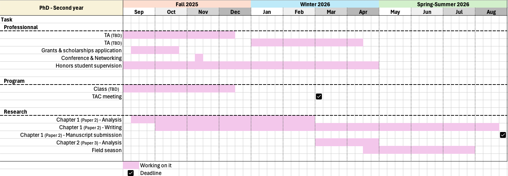
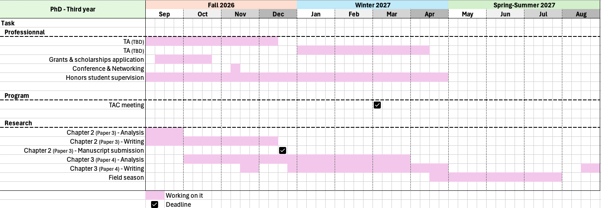
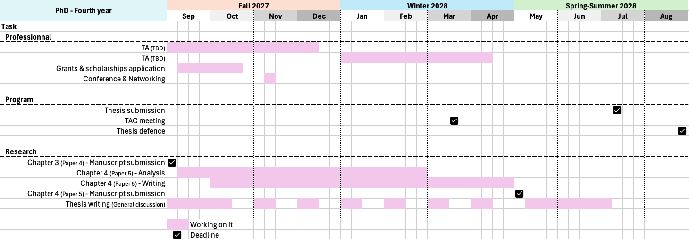

Faire face au changement climatique.
Implications de l’évolution de la masse corporelle chez la marmotte à ventre jaune (Marmota flaviventer) au cours du dernier demi-siècle.
Introduction
Changement climatique
Le changement climatique est incontestablement reconnu comme l’un des défis les plus importants de notre époque. Ses répercussions mondiales, telles que la fonte des pôles et l’élévation du niveau des océans, sont bien documentées et de plus en plus évidentes. Le changement climatique se caractérise par une hausse des températures, un changement des durées des saisons, une variabilité et imprévisibilité environnementales accrues, ainsi qu’une fréquence et gravité croissante des sécheresses et catastrophes naturelles (Intergovernmental Panel On Climate Change (Ipcc) 2022).
Le changement climatique a de nombreuses répercussions sur les sociétés humaines, qui sont bien illustrées, par exemple, dans la ville d’Ottawa. La température, la neige et les précipitations dans la capitale canadienne au cours du siècle dernier reflètent des tendances inquiétantes, mais attendues (par exemple, augmentation de la température, diminution de la neige, augmentation des précipitations, Walsh and Patterson 2022), avec des projections futures guère plus rassurantes (par exemple, continuation de l’augmentation en température, Zhai et al. 2019). La gestion de la patinoire du canal Rideau illustre bien cette tendance. En effet, ces dernières années, l’ouverture de la plus longue patinoire du monde est devenue de plus en plus incertaine, et son avenir est malheureusement, mais fatalement, remis en question.
Par-dessus tout, comme le montrent d’innombrables études, le changement climatique a un impact profond sur la grande majorité des écosystèmes terrestres (Intergovernmental Panel On Climate Change (Ipcc) 2022). Parmi ceux-ci, les habitats alpins sont particulièrement sensibles au changement climatique, avec des sécheresses plus prononcées et plus sévères, ainsi qu’une augmentation de la température moyenne et de la variabilité. Le changement climatique expose donc les environnements de haute altitude à un risque accru et peut entraîner des changements à plusieurs niveaux dans les écosystèmes, des communautés végétales aux communautés animales (Giorgi et al. 1997; Grabherr et al. 2010; Inouye and Wielgolaski 2003; Kittel et al. 2002), avec des répercussions importantes sur la disponibilité en plantes, affectant la densité en herbivores et potentiellement la dynamique des prédateurs. Les animaux de haute altitude doivent donc s’adapter non seulement aux changements de températures et de précipitations, mais aussi potentiellement à la disponibilité en nourriture et à la pression des prédateurs.
Les bouleversements écologiques profonds résultant du changement climatique mettent en danger de nombreuses espèces, qui doivent agir en conséquence pour éviter l’extinction, soit en se dispersant, soit en s’adaptant (Gienapp and Brommer 2014). Il est donc essentiel d’améliorer notre compréhension de la manière dont les populations naturelles font face à ces changements rapides et imprévisibles afin de mener des politiques de conservation efficaces.
Trait d’histoire de vie
La théorie de l’histoire de vie étudie la répartition des ressources entre les traits d’histoire de vie d’un individu. Cette théorie se base sur le fait que les individus en milieu naturel disposent d’un temps et de ressources limités et doivent donc faire des compromis entre différentes fonctions concurrentes telles que la croissance, le maintien et la reproduction (Bell 1980; Roff 1992). Stearns (1992) définit un trait d’histoire de vie comme une caractéristique phénotypique qui aura un impact direct sur la valeur sélective d’un individu (c.-à-d. la capacité d’un individu à transmettre ses gènes à la génération suivante, mesurée comme le produit de la survie et du succès reproducteur). Cependant, il s’agit d’une définition large qui pourrait correspondre à presque tous les traits, car la plupart des traits phénotypiques peuvent avoir un impact sur la survie ou le succès reproducteur. Par exemple, la condition physique et le moment de nidification permettent tous deux de prédire la probabilité de survie des femelles nicheuses chez les fuligules morillons (Aythya fuligula), les fuligules milouinans (Aythya ferina) et les canards souchets (Anas clypeata) (Blums et al. 2005) ; les guppys trinidadiens (Poecilia reticulata) plus téméraires et actifs survivent plus longtemps face aux prédateurs (Smith and Blumstein 2010) ; le nombre de partenaires et le succès reproducteur global sont influencés par la taille de la crête et des muscles fessiers chez les gorilles occidentaux mâles (Gorilla gorilla, Breuer et al. 2012) ; une agressivité élevée, liée à la testostérone, est corrélé à un plus grand succès reproducteur chez les femelles juncos aux yeux noirs (Junco hyemalis, Cain and Ketterson 2012). À l’inverse, on pourrait soutenir qu’aucun trait n’a d’impact direct, à proprement parler, sur la valeur sélective d’un individu. Par exemple, la taille des cornes chez le mouflon d’Amérique, Ovis canadensis, est corrélée au succès reproducteur global (Deakin et al. 2022), mais s’agit-il d’un prédicteur direct ou cela n’a-t-il qu’un impact sur la capacité à se battre, qui améliorerait le succès individuel en matière d’accouplement ?
Un trait d’histoire de vie se réfère généralement à des caractéristiques d’une espèce décrivant son cycle de vie et ayant une incidence sur la dynamique de population (par exemple, le poids à la première reproduction, la taille à la naissance, Stearns 1992). Cependants selon la définition des traits d’histoire de vie (à savoir, les caractéristiques phénotypiques qui ont un impact direct sur la valeur sélective d’un individu), tout trait sous sélection (c.-à-d. ayant un impact sur la survie et/ou le succès reproducteur d’un individu) est un trait d’histoire de vie. Une autre objection à cette définition est que, selon celle-ci, les traits d’histoire de vie définissent et sont définis par la valeur sélective, ce qui rend ce raisonnement tautologique.
En lisant la littérature, je me suis rendu compte que de nombreux auteurs travaillant sur les traits d’histoire de vie ne définissent pas explicitement la notion de trait d’histoire de vie, et lorsqu’ils le font, leurs définitions manquent souvent de clarté ou contiennent des raisonnements circulaire. La communauté aurait tout intérêt à travailler pour parvenir à un consensus sur une définition plus claire et complète. Pour la suite de ce document, je définirai un trait d’histoire de vie comme une caractéristique d’une espèce qui influe sur la dynamique des populations par ses effets sur la survie et le succès reproducteur des individus, et qui peut être mesurée de manière significative à un moment précis du cycle de vie d’un individu (par exemple, la taille à la naissance, l’âge à la maturité, le nombre de descendants).
Le rôle de la masse corporelle
Nous savons que la masse corporelle est étroitement liée à l’acclimatation à la température (Kurz 2008; c.-à-d. la thermorégulation, Riesenfeld 1981) et à l’abondance en nourriture (Acquarone et al. 2002). Par conséquent, le changement climatique devrait avoir un impact sur la masse corporelle, d’où l’importance cruciale d’étudier la manière dont les individus y réagiront.
La masse corporelle joue un rôle essentiel pour la plupart des espèces. Tout d’abord, elle influe sur le taux métabolique d’un individu (Darveau et al. 2002). Par exemple, Weibel et al. (2004) a montré une forte corrélation entre le taux métabolique maximal et la masse corporelle chez les mammifères. La masse corporelle est également étroitement liée aux réserves énergétiques d’un individu, ce qui a un impact sur sa résilience face aux défis environnementaux en lui permettant de faire face aux baisses saisonnières en ressources alimentaires (Heldstab 2017). De manière plus générale, la graisse corporelle peut être considérée comme un tampon contre des environnements difficiles (Denryter et al. 2022). En étendant ce raisonnement à une échelle de temps plus large, on peut s’attendre à ce que les individus de plus grande taille soient plus résistants face à des années de faibles ressources, augmentant leur résilience face à la variabilité et l’imprévisibilité de l’environnement (Einum and Fleming 2004).
D’un point de vue écologique, la masse corporelle influence la dynamique des populations en affectant à la fois la survie et le succès reproducteur. Par exemple, la masse corporelle explique 89% de la survie pendant l’hibernation chez les marmottes à ventre jaune (Marmota flaviventer Armitage 2014) ; les individus ayant une masse corporelle plus importante au début de l’hiver ont une probabilité de survie globale plus élevée chez les canards à dos blanc adultes (Aythya valisineria, Haramis et al. 1986) ; la variation de la masse corporelle en hiver a un impact significatif sur le succès reproducteur chez l’élan norvégien (Alces alces, Milner et al. 2013) ; une taille corporelle plus importante est corrélée à un succès de reproduction plus élevé chez les éléphants de mer du Nord (Mirounga angustirostris, Crocker et al. 2012) ; et les individus ayant des réserves énergétiques plus importantes présentent une meilleure capacité de reproduction chez les mouflons d’Amérique (Ovis canadensis, Festa-Bianchet et al. 1998). Les individus de plus grande taille sont également avantagés en termes de compétitivité et de dominance sociale. Par exemple, dans le cas des combats pour le territoire de reproduction, les mâles Calopteryx maculata ayant plus de graisse l’emportent dans 88% des cas (Marden and Rollins 1994). En ce qui concerne la dynamique sociale chez les mammifères, il existe une corrélation entre la dominance, l’âge et la taille (Stockley and Bro-Jørgensen 2011), comme l’illustrent les relations sociales des poneys sauvages (Equus caballus, Rutberg and Greenberg 1990) et des éléphants d’Afrique (Loxodonta africana, Archie et al. 2006).
Cependant, une masse corporelle excessive peut devenir un handicap. Bien que certaines caractéristiques coûteuses aient été théorisées comme étant avantageuses dans le cadre de la sélection sexuelle (Zahavi 1997), au-delà d’un certain point, les individus plus corpulents peuvent être contre-sélectionnés en raison de leurs performances réduites (par exemple, capacité réduite à échapper aux prédateurs, Jebb et al. 2021). De plus, les individus ayant une masse corporelle plus importante peuvent avoir des problèmes de thermorégulation dans les environnements chauds, car ils ont une capacité de dissipation thermique moins efficace (Bergmann 1847). Par conséquent, une taille trop importante peut rendre les individus plus sensibles au stress thermique et à la surchauffe dans les environnements chauds.
Si certains auteurs peuvent qualifier la masse corporelle de trait d’histoire de vie, considérant que cela influence la survie et la capacité de reproduction, d’autres soutiennent qu’il s’agit d’un simple trait morphologique. En raison d’un certain flou autour de la définition exacte d’un trait d’histoire de vie, et conformément à la définition proposée précédemment, il semble plus productif ici de considérer la masse corporelle comme un trait central influençant un large éventail d’autres traits et affectant finalement la condition physique globale. Dans l’ensemble, l’étude de l’évolution de la masse corporelle est essentielle pour comprendre comment les populations naturelles réagissent aux changements environnementaux.
Défis saisonniers et stratégies de régulation de la masse corporelle
Au cours d’une année, l’abondance en ressources peut fluctuer considérablement avec les saisons. Souvent, il y a une saison ‘difficile’, caractérisée par une faible abondance de nourriture et des températures extrêmes (Williams et al. 2017). Les espèces doivent s’adapter à ces variations saisonnières. Les stratégies les plus courantes consistent à migrer de façon saisonnière vers un environnement plus clément (par exemple, le martinet alpin, Tachymarptis melba, Alerstam and Christie 2004; Meier et al. 2020) ; à stocker de la nourriture avant la saison difficile (Jenkins and Busher 1979; par exemple, les castors, Castor canadensis, Smith et al. 1991) ; stocker de l’énergie sous forme de graisse pendant la saison favorable (Denryter et al. 2022; par exemple, le mouflon d’Amérique, Ovis canadensis, Stephenson et al. 2020) ; et enfin, l’hibernation (par exemple, les petites chauves-souris brunes, Myotis lucifugus, Jonasson and Willis 2012).
L’hibernation est un mécanisme d’adaptation consistant à réduire le métabolisme et la température corporelle à un niveau proche de la température de congélation, puis à émerger au début de la saison favorable. Parmi les hibernants, il existe deux stratégies principales : ils peuvent soit stocker de la nourriture (par exemple, les tamias, Tamias striatus, Bieber et al. 2014), soit stocker de la graisse (Carey et al. 2003; Geiser 2013; Nedergaard and Cannon 1990). L’un des exemples les plus emblématiques d’hibernant stockant des graisses est celui des marmottes (tribue : Marmotini, Armitage 2014).
Ces hibernants doivent donc se nourrir suffisamment pour accumuler assez de graisses en peu de temps, car ils ne sont actifs que pendant une partie, généralement courte, de l’année. Ils comptent sur un métabolisme très efficace, leur permettant d’accumuler rapidement les graisses dont ils ont besoin pour survivre à la prochaine saison d’hibernation. Certains hibernants stockant des graisses doublent presque leur poids au cours d’une saison active de seulement quatre mois (Armitage 2014; Carey et al. 2003). Par conséquent, au-delà de la capacité à stocker beaucoup de graisse, une adaptation nécessaire est d’avoir un métabolisme suffisamment efficace pour prendre ce poids rapidement. Ces conditions préalables représentent de nombreux défis et nécessitent des adaptations spécifiques. La masse corporelle et le métabolisme sont donc fortement contraints chez les hibernants.
Le rôle de la masse corporelle chez les hibernants va au-delà de la simple survie lors de l’hibernation. Bien que les hibernants émergent à la fin de la saison difficile, les ressources sont généralement encore rares, ce qui rend leur survie post-hibernation fortement dépendante de leurs réserves de graisse restantes. De plus, chez certaines de ces espèces, la reproduction a lieu dès la sortie d’hibernation, avant de pouvoir recommencer à se nourrir (Armitage 2014). Par conséquent, les individus doivent entrer en hibernation avec des réserves de graisse suffisantes pour assurer à la fois leur survie pendant l’hiver et les coûts énergétiques du début de la saison favorable (c.-à-d. recherche de nourriture malgré une faible disponibilité et reproduction).
Cependant, le réchauffement climatique pourrait modifier les pressions de sélection (ou agents de sélection, c.-à-d. les forces de sélection agissant sur un trait, Lynch and Walsh (1998); Stearns (1992); par exemple, facteurs environnementaux tels que la température ou les précipitations) agissant sur la masse corporelle des hibernants stockant des graisses. Des saisons difficiles plus douces et plus courtes (Wang et al. 2021) pourraient raccourcir la période d’hibernation et les défis associés à la survie. Dans ce contexte, on pourrait s’attendre à ce que le rôle de la masse corporelle devienne moins important avec le changement climatique pour ces espèces. Comme les contraintes environnementales pour ces hibernants changent avec le changement climatique, les changements observés dans la masse corporelle de ces espèces ne seront pas nécessairement adaptatifs (c.-à-d. des changements phénotypes associés à une meilleure valeur sélective, Lynch and Walsh (1998)).
Effets attendus du changement climatique sur la masse corporelle
Comme le théorisent certains auteurs, un changement de taille corporelle pourrait être une troisième réponse universelle au changement climatique, parallèlement à la modification de la phénologie et de l’aire de répartition géographique (Daufresne et al. 2009; Durant et al. 2007; Gardner et al. 2011; Visser and Both 2005). L’augmentation globale de la température devrait influencer des traits phénotypiques tels que la masse et la taille corporelles, bien que la direction précise de ces changements reste incertaine. Certains auteurs affirment qu’une réduction de la taille corporelle pourrait être une réponse universelle au changement climatique (Daufresne et al. 2009). Cette hypothèse s’appuie sur la règle de Bergmann, stipulant que les animaux de petite taille sont favorisés dans les environnements plus chauds, car un rapport surface/volume plus élevé facilite la dissipation de la chaleur (Bergmann 1847). Cependant, comme le souligne Gardner et al. (2011), l’absence d’études comparatives à grande échelle nous empêche de confirmer que cette réponse est universelle. De plus, en 2022, le rapport du GIEC a déclaré que “les preuves d’une réduction constante de la taille corporelle dans tous les groupes taxonomiques des animaux terrestres sont faibles” (Intergovernmental Panel On Climate Change (Ipcc) 2022; Siepielski et al. 2019).
D’autre part, plusieurs études menées à des latitudes et altitudes plus élevées donnent des résultats opposés (c.-à-d. une augmentation de la masse corporelle en réponse au changement climatique, Guillemain et al. 2010; Ozgul et al. 2010; Sheridan and Bickford 2011; Yom-Tov et al. 2008). Dans ces régions, le changement climatique est souvent synonyme de conditions plus clémentes. Les individus ont donc accès à une plus grande quantité de nourriture pendant plus longtemps et la sévérité de la saison difficile est réduite, ce qui, dans l’ensemble, est moins exigeant sur le plan énergétique. Finalement, ces nouvelles conditions permettent aux individus de devenir plus grands. Par conséquent, avec les changements climatiques, nous nous attendons à des changements dans la masse corporelle et nous devons comprendre les mécanismes et les facteurs sous-jacents de ces changements afin de pouvoir les prévoir.
Adaptation, Évolution, Plasticité phénotypique
Lorsqu’un environnement change, les populations qui y vivent peuvent éviter l’extinction de plusieurs façons. Elles peuvent se disperser vers un autre environnement plus favorable (Gienapp and Brommer 2014) ; elles peuvent modifier leur environnement pour qu’il corresponde à leurs besoins spécifiques (c.-à-d. des espèces ingénieures telles que les castors, Castor canadensis, Jones et al. 1994) ; ou bien des changements phénotypiques peuvent se produire au sein de la population, donnant des individus mieux adaptés à leur environnement (Gienapp and Brommer 2014).
Les changements phénotypiques peuvent se produire par le biais de deux mécanismes principaux : la plasticité phénotypique et l’évolution.
La plasticité phénotypique désigne la capacité d’un unique génotype à exprimer différents phénotypes selon les conditions environnementales. Ce processus permet des réponses rapides et réversibles au cours de la vie d’un individu. C’est donc un processus très flexible qui n’implique aucun changement au niveau génétique (Pigliucci 2001).
L’évolution, en revanche, est définie comme un changement dans les fréquences alléliques d’une population au fil du temps. Elle est guidée par quatre forces fondamentales :
Mutation, introduisant de la variation génétique par le biais de modifications des séquences ADN ;
Migration, maintenant le flux génétique entre des sous-populations, assurant l’homogénéisation génétique et apportant de nouvelles variations dans la population ;
Dérive génétique, correspondant à des fluctuations aléatoires des fréquences alléliques au fil des générations résultant de la taille finie de la population et qui peuvent conduire à des changements évolutifs en absence de sélection ;
Sélection naturelle, déterminée par un différentiel de reproduction et de survie chez les individus en fonction de leurs caractéristiques.
Pour que la sélection naturelle ait lieu, trois conditions doivent être remplies : 1) il doit y avoir de la variation phénotypique entre les individus ; 2) cette variation doit être associée à des différences de valeur sélective ; et 3) ces différences doivent être transmissibles aux générations suivantes (c.-à-d. héritables) (Lewontin 1970). Lorsque ces conditions sont réunies, les individus ayant des phénotypes avantageux auront un succès reproductif plus élevé, transmettant ainsi leurs gènes à travers les générations suivantes, gènes qui vont donc augmenter en fréquence dans la population (Lynch and Walsh 1998).
Ainsi, l’évolution est un processus pouvant être lent, mais ayant des effets à plus long terme et pourrait être une meilleure réponse à des changements écologiques persistants. Cependant, si le changement environnemental est transitoire, la plasticité pourrait être plus appropriée. Comme l’ont noté DeWitt et al. (1998) et Gardner et al. (2011), la plasticité phénotypique seule est peu susceptible d’être une réponse optimale à long terme au changement climatique, car elle constitue généralement une réponse transitoire à un changement temporaire, présentant des coûts et des limites. Comme le proposent DeWitt et al. (1998), la plasticité présente différents coûts :
Coûts énergétiques, pour pouvoir produire et maintenir différents phénotypes en réponse à des signaux environnementaux,
Coût génétique, provenant de potentiels liens génétiques, pouvant causer le maintien de gènes délétères,
Instabilité développementale, les modifications phénotypiques causées par un environnement variable deviennent délétères dans le cas d’une sélection stabilisante.
DeWitt et al. (1998) ont également proposé certaines limites à la plasticité :
Limite de fiabilité de l’information, une réponse plastique n’est pas nécessairement la plus adaptée pour un environnement donné (due à un signal erroné ou à un environnement variable),
Délai, correspondant au temps entre le changement environnemental et la réponse phénotypique,
Plage de développement, la gamme des phénotypes possibles sous la seule plasticité peut être plus restreinte qu’un changement fixe (c.-à-d. l’évolution),
Problème d’épiphénotype, des traits modifiés plus tard dans la vie peuvent être moins efficaces que des traits intégrés dès le début du développement.
De plus, si la réponse optimale au nouvel environnement est un phénotype canalisé (c.-à-d. une variance phénotypique très faible), la plasticité phénotypique peut même être inadaptée (Nussey et al. 2007). Par conséquent, la réponse optimale attendue à un changement environnemental à long terme, comme prévu avec le changement climatique, est l’évolution.
La plasticité phénotypique et l’évolution ne sont pas incompatibles pour autant. Par exemple, des traits hautement plastiques, comme la masse corporelle, peuvent changer considérablement au cours de la vie d’un individu en réponse aux fluctuations environnementales tant au cours d’une même année qu’entre plusieurs années. Parallèlement, ces traits peuvent également évoluer au niveau de la population sur des échelles de temps similaires. La plasticité elle-même peut aussi évoluer. En effet, la plasticité peut avoir une base génétique, ce qui signifie qu’il existe un potentiel de sélection et donc d’évolution de la plasticité phénotypique elle-même (Pigliucci 2005).
Les conséquences à long terme de ces processus diffèrent considérablement, car les changements évolutifs sont mesurés sur plusieurs générations et ont tendance à être plus permanents que les ajustements plastiques effectués au cours de la vie d’un individu. Par conséquent, il est difficile de déterminer dans quelle mesure chaque mécanisme contribue aux changements à long terme, mais cela est essentiel pour comprendre l’adaptation et l’évolution en réponse au changement climatique dans les populations naturelles.
La plasticité est généralement étudiée à l’aide de normes de réaction (Nussey et al. 2007; Via et al. 1995), c’est-à-dire en étudiant la valeur d’un trait phénotypique (par exemple, la masse corporelle) en réponse à un proxy environnemental (par exemple, la température, les précipitations). Une réponse plastique correspond à une valeur phénotypique différente associée à un environnement différent. Dans ce cadre, un trait est plastique si la pente de la norme de réaction est différente de 0 (Nussey et al. 2007).
Une norme de réaction est caractérisée par deux paramètres : l’élévation, qui est la valeur phénotypique attendue dans l’environnement moyen, et la pente, qui correspond au changement linéaire du phénotype sur le gradient environnemental. En termes statistiques, ces paramètres correspondent respectivement à l’« intercepte » et à la « pente » de la régression linéaire du phénotype sur l’environnement.
D’autre part, l’évolution repose sur un changement génétique, elle peut donc être étudiée en examinant les changements dans les valeurs génétiques des individus nés dans différentes cohortes.
Génétique quantitative et modèle animale
Étant donné qu’un changement phénotypique observé n’est pas nécessairement dû à de l’évolution (c.-à-d. à de la plasticité phénotypique), il peut être compliqué de déterminer l’occurrence de l’évolution dans des conditions naturelles. Heureusement, la génétique quantitative fournit des méthodes robustes et bien établies permettant de décomposer la variance phénotypique totale (\(V_P\)) en une composante génétique (\(V_A\)) et environnementale (\(V_E\)) : \(V_P = V_A + V_E\) (Lynch and Walsh 1998; Wilson et al. 2010). Connaître la composante génétique de la variance phénotypique nous permet d’étudier de potentiels changements génétiques, et donc évolutifs, au fil du temps.
Une méthode statistique bien connue pour décomposer la variance phénotypique en ses composantes génétiques et environnementales est le modèle animal (Kruuk 2004). Cette méthode permet une estimation robuste de la variance génétique d’un trait affecté par un grand nombre de gènes, chacun ayant des effets faibles (Hill and Kirkpatrick 2010; Kruuk et al. 2014; c.-à-d. un « trait quantitatif », comme décrit par le modèle infinitésimal, Lynch and Walsh 1998). Un modèle animal est un type spécifique de modèle mixte qui inclut un facteur individu comme effet aléatoire et qui suppose que les individus ne sont pas indépendants, mais génétiquement liés. La parenté génétique est généralement extraite d’un pedigree de la population (c.-à-d. liens parentaux entre chaque individu de la population, Lynch and Walsh (1998)).
Cette méthode a l’avantage d’être relativement simple à utiliser, permettant l’estimation des paramètres de variance génétique directement à partir des données phénotypiques. Seuls les liens parentaux entre les individus doivent être connus, ce qui rend cette méthode facilement applicable à des populations sauvages (Kruuk 2004; Lynch and Walsh 1998). Elle permet également de prendre en compte l’effet maternel (c.-à-d. l’effet de la condition de la mère et des soins parentaux) et l’environnement commun sur le phénotype étudié, en évitant une surestimation de l’effet génétique, simplement en ajoutant l’identité de la mère et le facteur année comme variable aléatoire dans le modèle (Kruuk and Hadfield 2007).
Comme le souligne Kruuk et al. (2014), il y a un besoin urgent pour des études de génétique quantitative sur des populations sauvages suivies à long terme, car le problème le plus courant dans ce type d’études est le manque de puissance statistique, qui peut être résolu grâce à la quantité de données fournies par les études à long terme. De telles études amélioreraient notre compréhension de la relation entre les animaux et leur environnement, ainsi que de la relation génotype-phénotype-environnement, en particulier dans un contexte de changement climatique mondial.
Coévolution des traits
Un défi reconnu, lorsque l’on étudie l’évolution dans un contexte naturel, est de prendre en compte la corrélation génétique entre plusieurs traits (Gould and Lewontin 1979; Roff 1992). En effet, lorsqu’un trait est génétiquement corrélé à un autre trait, il n’évolue pas de manière indépendante et son évolution peut soit entraîner des changements dans d’autres traits, soit être influencée par d’autres traits. Les corrélations génétiques sont souvent considérées comme des contraintes qui réduisent l’éventail des possibilités et des résultats atteignables dans le paysage adaptatif, mais elles peuvent également accélérer le processus d’atteinte d’un optimum (Arnold et al. 2001; Gould and Lewontin 1979; Teplitsky et al. 2014).
Lorsque l’on étudie l’évolution d’un trait spécifique (en particulier un trait ayant conséquences phénotypiques importantes), ne pas tenir compte de ses liens avec d’autres traits revient à simplifier à l’extrême. Cette omission peut biaiser non seulement notre compréhension des causes et des conséquences du changement phénotypique, mais aussi les estimations de son potentiel évolutif (Lande and Arnold 1983; Teplitsky et al. 2014; Walsh and Blows 2009). Pour étudier efficacement l’évolution des traits, il est essentiel de considérer que la sélection agit généralement sur plusieurs traits simultanément, car un phénotype est le résultat d’une combinaison de divers traits (Phillips and Arnold 1989).
Dans le prolongement de ce raisonnement, le syndrome du ‘Pace of Life’ (‘rythme de vie’) étendu suggère que les stratégies d’histoire de vie, les traits physiologiques et comportementaux coévoluent en réponse à l’environnement (Dammhahn et al. 2018; Réale et al. 2010).
Ainsi, si le changement climatique entraîne des modifications de traits physiologiques clés, on peut s’attendre à ce que d’autres traits physiologiques et comportementaux clés coévoluent avec lui. Par exemple, il a été observé que certains types de comportement sont systématiquement associés à des stratégies d’histoire de vie spécifiques (Biro and Stamps 2008; par exemple, les individus avec un cycle de vie plus rapide ont tendance à être plus téméraire, Stamps 2007; Wolf et al. 2007). Par conséquent, des changements de traits morphologiques tels que la masse corporelle devraient s’accompagner d’autres changements dans d’autres traits morphologiques, physiologiques et comportementaux. Une méthode robuste pour étudier la coévolution de plusieurs traits est le modèle animal multivarié, nous permettant d’estimer la covariance génétique entre chaque trait en modélisant simultanément plusieurs traits comme variables dépendantes (Kruuk 2004).
Cependant, ces modèles nécessitent de grandes quantités de données, et la principale raison pour laquelle les résultats significatifs obtenus avec ces méthodes sont assez rares aujourd’hui est que seules quelques systèmes d’études disposent de suffisamment de données pour soutenir la puissance statistique requise pour ces modèles complexes (Lynch and Walsh 1998). Cette limitation de puissance statistique est partiellement compensée par les jeux de données issus d’études à long terme (Charmantier et al. 2014).
Détecter de la variation individuelle dans la plasticité dans un contexte naturel
La plasticité a dû évoluer et être sélectionnée, ce qui implique des variations interindividuelles. Comme le soulignent Nussey et al. (2007), beaucoup d’informations sont perdues lorsque la plasticité est étudiée au niveau populationnel uniquement (c.-à-d. à l’aide d’un modèle linéaire fixe du phénotype dans l’environnement). Il est essentiel d’utiliser d’abord un modèle linéaire mixte pour estimer les différentes élévations pour chaque individu, ce qui permet au modèle de tenir compte de la variabilité individuelle de leur phénotype dans l’environnement moyen. Cependant, ce type de modèle ne permet pas d’estimer les différences de réponse plastique à l’environnement au niveau individuel, qui peuvent être biologiquement significatives et doivent être prises en compte.
Nussey et al. (2007) a proposé une méthode, aujourd’hui acceptée et utilisée, pour estimer cette variance individuelle dans la plasticité : la régression aléatoire. Commençons par un modèle linéaire mixte (LMM), le type de modèles mixtes le plus courant. Dans un LMM, il est possible d’ajouter un terme aléatoire d’individu sur l’intercepte pour estimer la variance interindividuelle d’élévation (c.-à-d. phénotype dans l’environnement moyen). Avec ce modèle, cependant, la pente est la même pour chaque individu. Mais, nous pouvons maintenant ajouter un terme aléatoire d’individu également sur la pente, estimant ainsi la variance interindividuelle à la fois dans l’ordonnée à l’origine (intercepte) et dans la pente. Le fait que les individus diffèrent dans leur pente (correspondant à leur réponse aux conditions environnementales) est communément désigné comme une interaction individu-environnement et noté I * E.
Une fois que nous avons estimé la variance interindividuelle en matière de plasticité, nous pouvons utiliser un modèle animal de régression aléatoire : « RRAM » (Nussey et al. 2007) pour décomposer cette variance en ses composantes génétiques et environnementales afin d’obtenir la variation génétique interindividuelle en matière de plasticité, communément appelée G * E. À partir de là, nous pouvons estimer la variation héritable de la pente de la norme de réaction et avoir une idée du potentiel évolutif de la plasticité phénotypique d’un trait.
D’un point de vue théorique, cette méthode permet d’estimer correctement les valeurs I * E et G * E d’un trait. Cependant, comme le soulignent Ramakers et al. (2023), une limitation importante persiste : le proxy environnemental utilisé pour la norme de réaction. En effet, si ce dernier n’est pas approprié (c.-à-d. trop éloigné du véritable prédicteur de la réponse plastique du trait), une partie importante de la variation individuelle réelle dans la plasticité n’est pas détectée, ce que Ramakers et al. (2023) ont appelé le « I * E caché ».
De plus, il est souvent impossible d’identifier le véritable prédicteur de plasticité dans des conditions naturelles. Cela vient du fait que les environnements naturels sont des systèmes exceptionnellement complexes et les individus doivent généralement réagir à une combinaison de variables environnementales plutôt qu’à une seule. Par conséquent, le véritable moteur de la plasticité est souvent inconnu, non mesurable et/ou une combinaison de nombreuses variables différentes. Une autre méthode consiste à utiliser le phénotype moyen spécifique à l’environnement (ESM) (Finlay and Wilkinson 1963; Ramakers et al. 2023). Bien que Ramakers et al. (2023) aient démontré l’efficacité de cette méthode, ils ont souligné qu’une très bonne connaissance du système d’étude est nécessaire pour que cette approche soit efficace. Bien que la méthode ESM soit utile, elle est loin d’être parfaite et des travaux supplémentaires sont nécessaires pour traiter ce problème de détection I * E en conditions naturelles.
La bonne nouvelle, c’est qu’une méthode statistique prometteuse et relativement nouvelle pourrait apporter de nouvelles perspectives intéressantes à ce sujet : le « modèle linéaire généralisé double hiérarchique » (DHGLM). Le DHGLM est un type de modèle mixte qui ajuste un modèle à la fois sur la moyenne et sur la dispersion d’un trait (Lee and Nelder 2006). En plus du modèle mixte standard, un DHGLM modélise directement la variance dans les résidus en fonction d’effets fixes et aléatoires. En d’autres termes, un DHGLM peut estimer la variance interindividuelle dans la variance résiduelle, ci-après dénommée \(V_{V_e}\).
Nous sommes convaincus que le DHGLM peut devenir une approche importante dans la boîte à outils utilisée pour détecter le I * E. En effet, lorsque le I * E n’est pas modélisé dans un DHGLM via une pente aléatoire parce que le E est inconnu, par exemple, alors la variation due au I * E sera capturée par la variance interindividuelle dans la variance résiduelle \(V_{V_e}\).
Bien qu’une valeur non nulle de \(V_{V_e}\) ne soit pas nécessairement due à la présence de I * E dans le système, elle justifierait des investigations supplémentaires en testant différents proxys environnementaux. En revanche, sauf dans des conditions très spécifiques, presque impossible dans des conditions naturelles (c.-à-d. un effet contraire parfait), une valeur de \(V_{V_e}\) égale à 0 indique que la contribution relative à la variance résiduelle dans le phénotype n’est pas significativement différente entre chaque individu et qu’il n’y a donc pas de variation individuelle de plasticité dans le système étudié.
Une caractéristique importante de cette méthode est qu’elle devrait être exempte des problèmes liés aux mauvais proxys environnementaux, car elle détecte le I * E à partir de la structure de la variance résiduelle dans le phénotype. Et évidemment, comme pour la régression aléatoire avec le RRAM, nous pouvons utiliser la génétique quantitative pour détecter également G * E en utilisant un « modèle animal double » (DAM).
Il s’agit d’une méthode très prometteuse, mais comme la plupart des nouvelles méthodes statistiques, elle est mal comprise et jusqu’à présent rarement utilisée de manière appropriée pour étudier le I * E. Par conséquent, une méthode générale, comprenant des applications claires montrant comment le DHGLM doit être utilisé pour détecter du I * E, serait vraiment utile pour la communauté, en particulier compte tenu du besoin croissant d’étudier efficacement la plasticité phénotypique et son évolution dans des conditions naturelles dans un contexte de changement climatique.
Système d’étude
Depuis 1962, une population sauvage de marmottes à ventre jaune (Marmota flaviventer, Figure 1) fait l’objet d’un suivi à long terme, initié par Kenneth Armitage, et maintenant codirigé par Julien Martin et Daniel Blumstein, au Rocky Mountain Biological Laboratory (RMBL) à Gothic, Colorado, USA (38°56’34” - 38°59’13” N /106°58’60” - 107°0’45” W). Cette étude est le deuxième plus long suivi à long terme d’une population de mammifères sauvages dans le monde.

La marmotte à ventre jaune est un sciuridé terrestre (Rodentia, Sciuridae) vivant dans les habitats alpins de l’ouest de l’Amérique du Nord. Leur cycle de vie est divisé entre une “saison active” représentant environ un tiers de l’année (de mai à septembre) où les individus doivent se reproduire et accumuler suffisamment de réserves de graisse pour survivre à l’hibernation pendant le reste de l’année (de septembre à mai) (Armitage 2014).
Les marmottes subissent de fortes fluctuations saisonnières de leur masse corporelle, avec un seuil critique devant être atteint avant le début de l’hibernation afin, premièrement, de survivre jusqu’à la prochaine saison active et, deuxièmement, de disposer de suffisamment d’énergie pour la reproduction (qui a lieu au cours des premières semaines de la saison active, Armitage 1965, 2014). (Figure 2). La masse corporelle est donc une caractéristique cruciale pour les marmottes.

Les marmottes à ventre jaune vivent en colonies, généralement composées d’une ou plusieurs matrilignes qui comprennent plusieurs femelles adultes, leur progéniture et un ou deux mâles adultes (Armitage 2014). Notre population est composée de 7 colonies principales et de 31 colonies plus petites réparties entre une vallée “haute” et une vallée “basse” différant de 300 m d’altitude (?@fig-map-site ; haute vallée : 3 000 m ; basse vallée : 2 700 m).
Les différences d’altitude entre les deux vallées impliquent des différences météorologiques telles qu’un retard dans la fonte des neiges et le début de la croissance de la végétation, ou des différences de température pouvant atteindre 2 °C (Armitage 2014; Blumstein et al. 2004). En conséquence de ces différences météorologiques, on peut observer un retard d’émergence pouvant aller jusqu’à deux semaines dans la haute vallée (Blumstein 2009; Monclús et al. 2014). Ces deux conditions différentes offrent une formidable opportunité de tester l’impact des différences environnementales sur plusieurs facteurs tout en travaillant dans des conditions naturelles.
Le cycle de vie d’hibernation des marmottes dépend fortement de l’environnement. En effet, leur phénologie (c’est-à-dire le début et la fin de la saison active) semble être principalement influencée par des variables météorologiques telles que la température et la couverture neigeuse (Armitage 2014), comme pour le reste des écosystèmes de haute altitude (Inouye and Wielgolaski 2003).
:::{#fig-map-site d’étude}

Les colonies rouges représentent les vallées “hautes”, les bleues les vallées “basses”. Les polygones à fond uni représentent les sept colonies principales. La carte a été créée avec le logiciel QGIS (QGIS Development Team 2024) et la carte de base provient d’ESRI (ESRI n.d.).
:::
Augmentation de la masse corporelle chez les marmottes à ventre jaune
Une augmentation importante de la masse corporelle a été observée dans cette population au cours du dernier demi-siècle, estimée à environ \(600\ g\), représentant près de \(20\%\) de la masse corporelle totale des individus (Birot, Blumstein & Martin, manuscrit en cours, Fig 3 (a)). Des études antérieures ont conclu que la majeure partie de ce changement était due à la plasticité phénotypique (Ozgul et al. 2010). Cela pourrait être attendu dans le cadre du changement climatique puisque la saison active s’allonge et que la population est confrontée à des conditions hivernales plus douces (par exemple, des températures plus élevées, moins de neige). Les marmottes ont donc plus de temps pour se nourrir et prendre du poids, et la période d’hibernation se raccourcit, ce qui signifie que les individus ont moins de temps pour perdre de la masse. Avec ces nouvelles conditions, les individus deviennent plus lourds.
Cependant, l’étude de Ozgul et al. (2010) a utilisé une approche qui s’est avérée par la suite défectueuse, n’estimant pas correctement la variance génétique (Chevin 2015; Janeiro et al. 2017). Avec maintenant près de 15 années de données supplémentaires, nous avons réanalysé les données sur la masse corporelle en utilisant des modèles animaux pour évaluer correctement le changement génétique de la masse corporelle au fil du temps en utilisant la masse corporelle de 199 femmes adultes entre 1965 et 2022 (657 observations). Nos résultats montrent une base génétique importante de la masse corporelle avec une héritabilité de 0,56, et une augmentation au niveau génétique de ~400 g au cours de la période étudiée, ce qui indique qu’environ deux tiers de l’augmentation observée de la masse corporelle sont en fait dus à des changements génétiques (Birot et al., Manuscrit en cours, Figure 3 (b)). Avec ces résultats, il est raisonnable de conclure que la plasticité n’est pas le seul processus à l’origine de ce changement phénotypique, mais que l’évolution joue également un rôle crucial.
En outre, bien que l’allongement de la saison active soit une bonne explication potentielle de l’augmentation de la masse corporelle par la plasticité phénotypique, elle ne correspond pas au modèle évolutif observé. En effet, les conditions de plus en plus douces observées parallèlement à ce changement de masse corporelle devraient diminuer la sélection sur la masse corporelle, puisqu’elles réduisent la pression liée à la survie lors de l’hibernation. L’augmentation de la masse corporelle observée ici devrait être attendue avec une pression croissante sur la survie hivernale. Il est clair que l’allongement de la saison active et les conditions globalement plus douces ne sont pas les seuls moteurs des changements de masse corporelle, puisque nous avons observé à la fois de la plasticité et de la micro-évolution.
Compte tenu de l’importance de la masse corporelle pour les marmottes à ventre jaune, il est crucial de comprendre comment ce trait dans cette population réagit au changement climatique, à la fois à des fins de conservation et pour mieux comprendre les liens entre le phénotype et l’environnement. Il est urgent d’étudier les facteurs environnementaux qui ont pu déclencher cette évolution, les mécanismes à l’origine de cette augmentation et les implications potentielles pour l’avenir de la population, afin de mieux comprendre comment une population naturelle peut faire face au changement climatique.


Collecte des données
Chaque année, entre mai et septembre depuis 1962, les marmottes de la population sont régulièrement piégées (entre 1 et 20 fois par individu, avec une moyenne de 4,5) à l’aide de pièges Tomahawk avec appâts (81 * 25 * 30 cm) situés près des entrées des terriers. Si l’individu est capturé pour la première fois, il est identifié en plaçant une paire unique de marques auriculaires numérotées, ainsi qu’une marque de fourrure à base de colorant noir Nyzanol non toxique pour une identification à distance lors des observations comportementales. Plus de 95 % des individus sont capturés au cours de leurs deux premiers étés de vie (en tant que juvéniles ou jeunes d’un an) et ont donc une année de naissance et un âge connus. Les classes d’âge de la marmotte peuvent être définies comme suit : juvéniles, première année de vie, jeunes d’un an, un an, jeunes adultes, deux et trois ans, et adultes, plus de trois ans (Jebb et al. 2021). Il convient de noter que les jeunes adultes peuvent se reproduire, mais n’ont pas terminé leur croissance squelettique.
La masse corporelle est un caractère très plastique, en particulier chez les marmottes, car elle subit des fluctuations considérables tout au long de la saison active. Pour des raisons évidentes, il est impossible d’enregistrer la masse corporelle de tous les individus en même temps. Il est donc nécessaire de l’estimer pour chaque individu à la même période de l’année. En utilisant des mesures répétées pour chaque individu tout au long de chaque saison active, un modèle linéaire mixte a été ajusté et ses meilleurs prédicteurs linéaires non biaisés ont été utilisés pour extraire la masse corporelle de chaque individu au début et à la fin de la saison active de chaque année, c’est-à-dire le 1er juin et le 15 août (Jebb et al. 2021; Martin and Pelletier 2011; détails dans Ozgul et al. 2010). Sur 61 ans d’observations (1962 - 2022), nous disposons de 7 586 estimations de masse corporelle pour 4 656 individus.
Les liens parentaux sont connus entre la plupart des individus de la population (liens maternels connus pour 3 435 individus et liens paternels pour 1 943 individus à ce jour), ce qui permet de reconstruire un pedigree très détaillé. Avant 2002, les liens maternels étaient estimés par des observations comportementales. Depuis 2002, l’assignation génétique de la parenté est utilisée pour confirmer les liens maternels et déterminer les liens paternels (détails dans Blumstein et al. 2010; Olson et al. 2012).
Des observations comportementales et des expériences (vitesse de course et distance d’initiation de fuite (Ydenberg and Dill 1986)) sont menées tout au long de la saison. Lors de chaque capture, les individus sont sexés, pesés (initialement avec une balance à ressort (± 50 g) et maintenant avec une balance numérique (± 10 g)), mesurés et des échantillons d’ADN sont prélevés. De plus amples descriptions peuvent être trouvées dans Armitage (2014).
Comme notre site d’étude est une station scientifique importante depuis près d’un siècle, nous disposons de données variées et exhaustives. En combinant plusieurs sources de données, telles que billy barr (un scientifique amateur, ermite et seul résident à l’année de RMBL, Phippen 2017), la National Oceanic and Atmospheric Administration (NOAA), l’United States Geological Survey (USGS), le United States Department of Agriculture (USDA) et le groupe PRISM Climate de l’Oregon State University, Prather et al. (2023) nous fournit des données exhaustives. Nous disposons de données météorologiques (par exemple, températures mensuelles, enneigement, précipitations, durée des saisons) sur notre site d’étude de 1975 à 2022.
Les données sont stockées dans le package R “ybamaRmot” (Martin and Blumstein 2024), l’analyse sera réalisée en R (R Core Team 2023), les modèles animaux seront réalisés à l’aide des packages R “asreml” (Butler et al. n.d.), “lme4breeding” (Covarrubias-Pazaran 2024) et “MCMCglmm” (hadfieldMCMethodsMultiResponse2010?), les DHGLMs et autres modèles complexes utilisant une approche bayésienne seront réalisés avec “brms” (Bürkner 2021) ou stan directement (Carpenter et al. 2017; Stan Development Team et al. 2020), les figures seront réalisées avec “ggplot2” (Wickham 2016).
Objectifs de la recherche
La masse corporelle a augmenté d’environ 20 % chez les femelles adultes de marmottes à ventre jaune au cours des 50 dernières années. Contrairement aux études précédentes, j’ai montré au cours de mon travail de maîtrise qu’une grande partie du changement de masse corporelle est en fait due à la micro-évolution, ce qui signifie que le scénario évolutif expliquant ce changement phénotypique doit être repensé (Figure 4).
Tout d’abord, je vérifierai comment la masse corporelle a évolué dans le temps en fonction du sexe (mâle et femelle), de la classe d’âge (juvéniles, jeunes d’un an, jeunes adultes et adultes) et de la période de l’année (début et fin de la saison active), à la fois au niveau phénotypique et au niveau génétique.
Même si nos résultats indiquent une forte variation génétique de la masse corporelle, cela n’explique pas la totalité du changement phénotypique. La plasticité phénotypique joue également un rôle ici, et pour comprendre pleinement la réaction de la population au changement climatique, nous avons besoin de meilleures méthodes pour détecter et étudier le I * E. Par conséquent, sur la base d’une approche de simulation, je vais développer un cadre permettant d’utiliser les DHGLMs pour détecter I * E* dans des conditions naturelles. J’utiliserai ensuite cette méthode pour vérifier s’il existe une variation individuelle dans la plasticité de la masse corporelle.
Pour continuer, j’étudierai les causes de l’évolution de la masse corporelle dans cette population. Après avoir étudié la masse corporelle au début et à la fin de la saison active, je pourrai tester l’effet des conditions des saisons active et d’hibernation, ainsi que de la durée de la saison sur l’augmentation (pendant la saison active) et la perte (pendant l’hibernation) de la masse corporelle.
Enfin, j’analyserai les conséquences de cette augmentation de la masse corporelle. J’étudierai les changements comportementaux potentiels, ainsi que l’équilibre entre la condition physique et l’expérience dans le comportement individuel. La compréhension du lien entre ces facteurs est cruciale pour prédire les impacts potentiels sur la dynamique de la population à l’avenir.
Chapitre 1. Augmentation de la masse corporelle au fil du temps, du sexe, de la classe d’âge et de la période de l’année

Dans mon premier chapitre, j’étudierai l’évolution de la masse corporelle de cette population au cours de la période d’étude, en fonction du sexe, de la classe d’âge et de la période de l’année (Figure 5). Nous savons que la masse corporelle à la fin de la saison active (estimée au 15 août) a augmenté pour les femelles adultes au niveau phénotypique et génétique (Birot, Blumstein & Martin, manuscrit en cours). Cependant, nous ne savons toujours pas comment la masse corporelle des femelles adultes au début de la saison active (estimée au 1er juin) a varié au cours de la même période, ni pour les autres classes d’âge, ni pour les mâles. Il est essentiel de considérer que la pression de sélection, la structure génétique et l’évolution peuvent être différentes selon le sexe et la classe d’âge. Nous devons prendre en compte la “fraction manquante” (c’est-à-dire le biais résultant d’un type spécifique de sélection de viabilité qui fait qu’une population adulte ne comprend qu’un certain sous-ensemble de phénotypes, Mittell and Morrissey 2024) afin de mener une étude complète de la sélection agissant sur la masse corporelle des marmottes (Grafen 1988; Hadfield 2008; Jebb et al. 2021).
La masse corporelle des juvéniles devrait rester stable car elle favorise une vitesse de course plus élevée, ce qui permet aux juvéniles d’échapper plus efficacement aux prédateurs et donc de passer plus de temps à chercher de la nourriture. Au contraire, on s’attendait à une sélection en faveur d’une masse corporelle plus importante chez les adultes, qui s’appuient sur la vigilance sociale pour éviter les prédateurs. Cette sélection stabilisatrice attendue sur la masse corporelle des juvéniles était la principale explication de la stabilité de la masse corporelle des marmottes adultes (Jebb et al. 2021). Cependant, avec nos nouveaux résultats sur les femelles adultes, nous devons maintenant étudier les changements potentiels de masse corporelle et l’évolution pour chaque classe d’âge.
En outre, nous avons étudié la masse corporelle à la fin de la saison active (15 août), mais nous disposons également de données à la sortie de l’hibernation (1er juin). Nous devons analyser les changements potentiels, à l’échelle phénotypique et génétique, à la sortie de l’hibernation afin de mieux comprendre la réponse de notre population au changement climatique.
Une analyse préliminaire portant sur la masse corporelle des cohortes de juvéniles au cours de la période d’étude pour les mâles et les femelles révèle des détails intéressants (Figure 6). Nous constatons que si la masse à la naissance est relativement stable (voire en légère diminution), la masse à la fin de la première saison d’activité des individus présente un schéma similaire à celui observé chez les femelles adultes (effet cubique, Figure 3), bien que la diminution à la fin de la période semble beaucoup plus prononcée ici. En effet, la masse corporelle à la fin de la première saison de recherche de nourriture de nos juvéniles est passée de 1 130,64 g en 1979 à 1 363,03 g en 2001 (Estimations à partir d’une régression locale sur les données brutes). Ces changements représentent une augmentation de la masse corporelle de 21 % en 22 ans (22 cohortes), ce qui signifie qu’entre la fin des années 1970 et le début des années 2000, chaque cohorte était presque 1 % plus lourde que la précédente à la fin de sa première saison de recherche de nourriture (Figure 6).

Par conséquent, j’analyserai les changements de la masse corporelle au cours de la période d’étude pour toutes les classes d’âge au début et à la fin de la saison active, à la fois au niveau phénotypique et génétique.
Pour ce faire, j’utiliserai notre vaste ensemble de données dans lequel nous disposons d’estimations de la masse corporelle au 1er juin et au 15 août pour 1 119 juvéniles âgés sur 49 ans (entre 1965 et 2017) ; 552 jeunes d’un an sur 52 ans (entre 1965 et 2018 & nés entre 1964 et 2017) ; 257 jeunes adultes sur 49 ans (entre 1965 et 2018 & nés entre 1964 et 2017) ; et pour 199 adultes avec 657 observations sur 57 ans (entre 1965 et 2022 & nés entre 1962 et 2017), ce qui donne un total de 1 211 individus différents, avec des liens parentaux connus pour la plupart d’entre eux.
Dans un premier temps, j’examinerai la variation à l’échelle phénotypique sur des cohortes temporelles (individus année de naissance) à l’aide de modèles linéaires multivariés pour tenir compte des corrélations entre les classes d’âge.
\[ \begin{pmatrix} Masse\ corporelle\ Juin_{Juveniles} \\ \\ Masse\ corporelle\ Juin_{Jeunes\ d'un\ an} \\ \\ Masse\ corporelle\ Juin_{Jeunes\ adultes} \\ \\ Masse\ corporelle\ Juin_{Adultes} \end{pmatrix} \sim \begin{aligned} \textbf{Fixed} &= Vallée + Age \\ \\ \textbf{Random} &= Animal + UID + Année\ de\ mesure \end{aligned} \tag{1}\]
Ensuite, afin de mener une étude complète de la sélection agissant sur la masse corporelle, j’utiliserai des modèles animaux multivariés pour estimer la covariation génétique entre chaque classe d’âge pour la masse corporelle à l’émergence, (Equation 1)
\[ \begin{pmatrix} Masse\ corporelle\ Aout_{Juveniles} \\ \\ Masse\ corporelle\ Aout_{Jeunes\ d'un\ an} \\ \\ Masse\ corporelle\ Aout_{Jeunes\ adultes} \\ \\ Masse\ corporelle\ Aout_{Adultes} \end{pmatrix} \sim \begin{aligned} \textbf{Fixed} &= Vallée + Age \\ \\ \textbf{Random} &= Animal + UID + Année\ de\ mesure \end{aligned} \tag{2}\]
et avant l’hibernation (Equation 2). Ces modèles me permettront d’estimer la valeur génétique de la masse corporelle pour chaque cohorte temporelle et dans les différentes vallées, tout en tenant compte de l’environnement et de la variabilité intra-annuelle. À partir de ces modèles, je pourrai extraire les matrices de variance-covariance génétiques estimées (“matrice G”), ce qui me permettra de vérifier l’existence d’une pléiotropie antagoniste potentielle (c’est-à-dire un cas spécifique de sélection équilibrée dans lequel la valeur sélective au début de la vie est maximisée au détriment de la valeur sélective à un stade ultérieur de la vie, Hedrick 1999). Je testerai cette pléiotropie en examinant la covariance génétique de la masse corporelle entre les différentes classes d’âge.
Chapitre 2. Détecter la variation individuelle dans la plasticité avec les DHGLMs
La détection de la variation individuelle de la plasticité est un défi en raison de l’aspect inconnu des variables environnementales auxquelles les organismes répondent (Nussey et al. 2007; Ramakers et al. 2023). Bien que certaines méthodes existent, elles sont encore limitées par de nombreux biais provenant des variables environnementales. Les DHGLMs constituent une voie prometteuse pour l’étude de I * E dans les populations naturelles, mais une étude visant à révéler son potentiel et ses limites est nécessaire.
Lors de l’ajustement d’un DHGLM sur un trait phénotypique focal avec des observations multiples pour chaque individu et tous les individus ont subi la même variation dans l’environnement, en l’absence de I * E (c’est-à-dire que chaque individu présentera la même réponse phénotypique, Figure 8 a), nous nous attendons à ne pas voir de variance interindividuelle dans la variance résiduelle (\(V_{V_e} = 0\), Figure 8 c).
Toutefois, s’il existe une variation individuelle dans les réponses plastiques (I * E) pour le trait phénotypique focal (Figure 8 b) et qu’elle n’est pas modélisée par une norme de réaction, la variance résiduelle intra-individuelle ne sera pas la même pour chaque individu, et donc \(V_{V_e}\) sera différent de 0 (Figure 8 d).

Bien que détecter que \(V_{V_e}\) est différent de 0 ne soit pas une preuve de I * E en soi, puisque la variation pourrait être due à d’autres processus, c’est une condition nécessaire de I * E. Trouver \(V_{V_e} > 0\) suggérerait donc qu’il vaille la peine d’étudier un potentiel I * E et de rechercher le E inconnu.
Enfin, il convient de noter un biais potentiel de cette méthode qui doit être pris en compte lors de l’exécution d’une telle analyse. Lorsque les individus sont échantillonnés sur différentes gammes de valeurs environnementales, la variance intra-individuelle de la variance résiduelle peut être différente de zéro malgré l’absence de I * E (Figure 8 e, f). Cependant, l’ajout de l’environnement comme effet fixe dans le modèle éliminerait ce biais.
Sur cette base, je simulerai des valeurs phénotypiques et environnementales pour des populations avec et sans I * E, avec des conditions environnementales équilibrées et déséquilibrées. Sur ces données simulées, j’ajusterai des DHGLMs dans un cadre bayésien en utilisant le paquet R, “brms” (Bürkner 2021), et le logiciel stan (Carpenter et al. 2017; Stan Development Team et al. 2020). J’étudierai également l’utilisation potentielle de “TMB” (Kristensen et al. 2016) qui permet d’ajuster les DHGLMs en utilisant une approche fréquentiste qui est beaucoup plus rapide, en particulier dans une configuration de simulation, mais qui repose sur un langage de codage différent (mélange de R et de C).
J’appliquerai ensuite cette méthode à notre population de marmottes à ventre jaune afin de l’illustrer par un exemple en conditions réelles. Bien que mon travail préliminaire de maîtrise ait montré que la majorité de l’augmentation de la masse corporelle repose sur un changement génétique et constitue donc une évolution, nos estimations indiquent qu’une part significative (environ 40 %) de ce changement est due à la plasticité. Ozgul et al. (2010) a déjà proposé que cela était dû à des saisons actives plus longues donnant aux individus plus de temps pour se nourrir. Mais, à notre connaissance, cette plasticité de la masse corporelle n’a pas été étudiée au niveau individuel, et la variation individuelle de la plasticité doit encore être testée. C’est pourquoi je prévois d’appliquer la méthode DHGLM à la recherche d’un potentiel I * E dans la masse corporelle de notre population de marmottes à ventre jaune (Figure 7).
Chapitre 3. Identifier les prédicteurs de l’augmentation de la masse corporelle
Si nous examinons la variation de la rigueur climatique sur notre site d’étude au cours des 50 dernières années, comme on peut s’y attendre avec le changement climatique, nous constatons une nette tendance à des années plus chaudes et plus douces au fil du temps (Figure 10).

A première vue, l’évolution vers une masse corporelle plus importante chez les marmottes semble attendue. En effet, une masse corporelle plus importante est associée à une meilleure valeur sélective car elle augmente la probabilité de survie pendant l’hibernation (Jebb et al. 2021; Ozgul et al. 2010). Le principal événement de sélection étant l’hibernation. Cependant, nous avons ici une sélection pour une masse corporelle plus importante, dans une période où la pression de sélection de l’hibernation diminue en raison d’hivers plus chauds et plus doux (Figure 11). Nous sommes donc confrontés à une sorte de paradoxe, où l’évolution semble se produire lorsque la pression de sélection présumée diminue.

Le changement de la durée de la saison est une bonne explication pour l’augmentation de la masse corporelle grâce à la plasticité, les individus ayant plus de temps pour chercher leur nourriture. Mais ce paradoxe justifie des recherches supplémentaires pour identifier les pressions de sélection à l’origine de l’évolution observée de la masse corporelle.
La première étape consistera à rassembler des données environnementales. Je serai en mesure d’extraire et d’estimer la durée de l’hibernation et de la saison active, les conditions saisonnières (accumulation moyenne de neige, températures et précipitations moyennes), la disponibilité de la nourriture, ainsi que la fréquence et la gravité des sécheresses au cours des 50 dernières années (Figure 9).
Ensuite, à partir de la masse corporelle au début et à la fin de la saison active, je pourrai également estimer le gain de masse corporelle au cours d’une saison active (masse en août moins masse en juin), mais aussi la perte de masse au cours de l’hibernation (masse en juin moins masse en août de l’année précédente).
\[ \begin{pmatrix} Gain\ masse\ corporelle \\ \\ Perte\ masse\ corporelle \end{pmatrix} \sim \begin{aligned} \textbf{Fixed} &= Conditions\ saisonnières + Age + Sécheresse \\ &+ Nourriture + Durée\ saisons \\ \\ \textbf{Random} &= Animal + UID + Années\ de\ mesure \end{aligned} \tag{3}\]
Je commencerai ensuite par examiner la tendance temporelle des données environnementales et des données relatives à la masse corporelle. J’estimerai également la covariance de la variance génétique entre le gain et la perte de masse à l’aide de modèles animaux bivariés. Enfin, je testerai l’effet des différentes données environnementales, tout en contrôlant pour l’âge des individus (Equation 3).
Chapitre 4. L’équilibre entre la condition corporel et l’expérience comme prédicteurs du comportement des marmottes

Dans le contexte du syndrome du rythme de vie étendu (Dammhahn et al. 2018; Réale et al. 2010), nous nous attendons à une corrélation entre la masse corporelle et le comportement des individus. Des preuves ont été trouvées pour un lien entre la masse corporelle et le comportement individuel dans notre population de marmottes à partir d’expériences en milieu ouvert (Petelle et al. 2019). Comme l’expliquent et le soulignent Lande and Arnold (1983) et Teplitsky et al. (2014), pour comprendre l’évolution d’un caractère, il faut tenir compte des corrélations potentielles avec d’autres caractères. Par conséquent, pour mieux comprendre ce qui se passe pour la masse corporelle et le comportement dans cette population, il est nécessaire d’étudier l’évolution de chaque caractère ainsi que leur corrélation génétique et phénotypique (Figure 12).
En outre, nous nous attendons également à ce que le comportement et la personnalité soient influencés par l’expérience de vie et changent au cours de la vie d’un individu (Stamps and Groothuis 2010).
Dans notre population, par exemple, la proportion de temps passée à “regarder debout” semble être davantage influencée par la masse corporelle au cours des deux premières années de vie que chez les adultes (Figure 13).

Si l’impact de la masse corporelle, avec des individus plus gros qui passent plus de temps à regarder, est facilement explicable car les individus plus lourds sont plus lents et doivent donc rester plus vigilants pour éviter la prédation, cet effet de l’âge est intéressant à noter et plaide pour l’hypothèse qu’avec l’âge, l’expérience pourrait prévaloir sur la condition physique pour dicter le comportement, avec des individus plus âgés plus prudents que les juvéniles, comme l’a déjà suggéré Jebb et al. (2021).
\[ Audace \sim \begin{aligned} \textbf{Fixed} &= Cohorte \\ \\ \textbf{Random} &= Animal + UID + Année\ de\ mesure_{Facteur} \end{aligned} \tag{4}\]
Nous disposons d’observations répétées pour un grand nombre d’individus sur diverses variables à partir d’observations focales de 2 minutes et d’expériences sur la distance d’initiation de fuite. Je vais réévaluer la répétabilité (à l’aide de modèles mixtes) de chacune de ces variables, puis examiner la corrélation entre ces variables afin de déterminer les valeurs individuelles de divers traits de personnalité tels que l’audace (Réale et al. 2007). Je déterminerai ensuite l’héritabilité de chacun de ces traits (à l’aide de modèles animaux, Equation 4).
\[ \begin{pmatrix} Audace \\ \\ Masse\ corporelle \end{pmatrix} \sim \begin{aligned} \textbf{Fixed} &= Cohorte \\ \\ \textbf{Random} &= Animal + UID + Année\ de\ mesure_{Facteur} \end{aligned} \tag{5}\]
Ensuite, j’estimerai la corrélation génétique entre ces traits de personnalité et la masse corporelle au sein des cohortes à l’aide d’un modèle animal bivarié (Equation 5).
\[ Audace \sim \begin{aligned} \textbf{Fixed} &= Masse\ corporelle * Age + Cohorte \\ \\ \textbf{Random} &= UID + Année\ de\ mesure_{Facteur} \end{aligned} \tag{6}\]
Enfin, je testerai l’effet de l’interaction entre la masse corporelle et l’âge de l’individu tout en tenant compte de la variation entre les cohortes et en contrôlant les effets d’individu et d’année de mesure, à l’aide de LMM (Equation 6).
De plus, la population de marmottes semble augmenter depuis les années 2000 (Ozgul et al. 2010). Par ailleurs, on sait que la masse corporelle (Ozgul et al. 2010), mais aussi le comportement (Réale et al. 2007; Wolf and Weissing 2012) peuvent avoir un impact sur la dynamique des populations. Il est donc crucial d’étudier la relation entre la masse corporelle, le comportement et la dynamique des populations pour mieux comprendre et prédire les implications futures de cette augmentation de la masse corporelle pour notre population dans un contexte de changement climatique.
Signification et impacts
Ce projet offre une rare opportunité d’étudier une réponse remarquable au changement climatique aux niveaux phénotypique et génétique. L’augmentation de la masse corporelle observée chez les marmottes à ventre jaune - représentant une hausse substantielle de 20 % chez les femelles adultes - s’est produite à une vitesse notable, apparemment sur trois décennies, entre les années 1970 et le début des années 2000.
En utilisant l’un des ensembles de données à long terme les plus complets et les plus détaillés sur une population naturelle, cette recherche permet une exploration sans précédent de la réponse des populations sauvages au changement climatique. Cette recherche permet des analyses complexes et puissantes, généralement irréalisables dans les systèmes naturels.
En étudiant la manière dont la masse corporelle a changé (c’est-à-dire la constitution de base ou la capacité de croissance), en développant de nouvelles méthodes pour détecter la variation individuelle de la plasticité et en identifiant les prédicteurs de ce changement, cette recherche apportera des connaissances cruciales sur l’interaction complexe entre le génotype, le phénotype et l’environnement. En outre, l’étude de l’équilibre entre la condition corporelle et l’expérience de vie en tant que prédicteurs du comportement individuel améliorera notre compréhension des stratégies adaptatives dans les populations sauvages.
En étudiant la façon dont les populations naturelles réagissent aux changements rapides des conditions environnementales, ce projet vise à fournir des informations essentielles pour les stratégies de conservation et les prévisions. Comprendre les causes et les conséquences de la réponse phénotypique au changement climatique est essentiel pour prédire la viabilité future des populations naturelles.
Nous espérons que les résultats de cette recherche contribueront à informer les décideurs en matière de conservation en améliorant les projections de la capacité d’adaptation et de la résilience des espèces au changement climatique, offrant ainsi des conseils pour la gestion de la biodiversité dans un monde en évolution rapide.
Projets secondaires potentiels
- Tamponner l’instabilité environnementale en augmentant sa masse corporelle : une application du pari conservateur chez un rongeur hibernant.
Lors de la production de la progéniture, la stratégie de bet-hedging consiste à “parier” sur la meilleure valeur sélective à long terme, au détriment de la valeur sélective immédiate, afin de faire face à un environnement imprévisible (Childs et al. 2010; Philippi and Seger 1989; Starrfelt and Kokko 2012).
La stratégie de bet-hedging peut être de deux types, soit le bet-hedging diversifiant (généralement expliqué par l’adage “ne mettez pas tous vos œufs dans le même panier”), qui correspond à l’augmentation de la variance phénotypique dans la progéniture, augmentant ainsi les chances qu’au moins certains d’entre eux soient adaptés aux conditions auxquelles ils seront confrontés, et assurant ainsi la transmission des gènes aux générations suivantes (Cohen 1966; Rajon et al. 2014) ; ou le bet-hedging conservateur (expliquée par l’adage “un tiens vaut mieux que deux tu l’auras”), correspondant à une faible variation de la valeur sélective (i.e., nombre de descendants), ce qui peut être coûteux les années où les conditions sont bonnes car cette valeur sélective n’est pas maximisée, mais plus sûr les années où elles sont mauvaises, car la valeur sélective est moins variable (Einum and Fleming 2004; Philippi and Seger 1989).
Avec le changement climatique, l’environnement est plus imprévisible que jamais. Pour faire face à cette imprévisibilité, le bet-hedging conservateur devrait être une stratégie adaptative pertinente (Einum and Fleming 2004).
Appliquée à la masse corporelle, cette stratégie correspondrait à la production d’une progéniture moins nombreuse mais plus grande, et à une variance réduite du phénotype de la progéniture. Le coût pour la condition physique immédiate du parent est que, lors d’une bonne année, davantage de descendants auraient pu être produits, assurant ainsi une plus grande transmission des gènes. Cependant, lors des mauvaises années, les chances de survie de la progéniture sont plus grandes (Philippi and Seger 1989).
Pour les marmottes, les individus plus grands auraient plus de chances de survivre à l’hibernation et donc de participer à la prochaine saison de reproduction. L’environnement devenant de moins en moins prévisible, en particulier à haute altitude (Inouye and Wielgolaski 2003), le pari conservateur peut être considéré comme une assurance. Grâce à cette stratégie, la condition physique sera moins variable car elle sera moins influencée par la qualité de l’année en termes de ressources, les individus les plus grands étant capables d’amortir les mauvaises années. Cette diminution de la variabilité de la condition physique au fil du temps devrait être favorisée par la sélection (Cohen 1966; Einum and Fleming 2004).
J’utiliserai une approche basée sur la simulation de différentes stratégies (bet-hedging vs non bet-hedging) paramétrées sur la population observée a RMBL. Dans un premier temps, je comparerai la moyenne géométrique de valeurs sélective (Philippi and Seger 1989) sur la période d’étude pour les deux populations simulées. Cela me permettra de vérifier si les deux stratégies ont des résultats différents et, le cas échéant, quelle stratégie serait la meilleure dans notre habitat.
Bien qu’il ait été prédit que le bet-hedging conservateur pour une progéniture moins nombreuse mais plus nombreuse était une bonne stratégie pour faire face à un environnement imprévisible, si celui-ci devient trop variable, les simulations montrent que le bet-hedging diversifié devient une meilleure option (Einum and Fleming 2004). En effet, la population peut ne pas s’adapter à son environnement (Stenseth and Mysterud 2002; Visser and Both 2005). Ensuite, si la variation phénotypique a trop diminué, la population perd sa capacité d’adaptation et se retrouve dans un “piège évolutif” (Robertson et al. 2013; Schlaepfer et al. 2002).
- Identifier les patchs clés pour la persistance des métapopulations en utilisant des méthodes d’analyse des réseaux sociaux. (Poursuite d’un projet précédemment lancé à NTNU avec le Dr. Yimen Araya-Ajoy).
Une métapopulation est définie comme un ensemble de sous-populations, plus ou moins interconnectées. Les liens entre les sous-populations (c’est-à-dire les flux migratoires) dans une métapopulation sont cruciaux pour sa survie dans le temps, car ils maintiennent la diversité génétique. Si une sous-population se retrouve isolée du reste du réseau, le manque de diversité génétique la met en danger d’extinction.
Dans une certaine mesure, une métapopulation peut être considérée comme un réseau social à une échelle populationnelle (c’est-à-dire un ensemble de points connectées par des liens d’intensité variable, Krause et al. 2015). Par conséquent, l’analyse de réseaux sociaux peut offrir une approche intéressante pour étudier la dynamique des métapopulations en identifiant les parcelles clés qui contribuent à la connectivité et à la résilience du réseau (Farine and Whitehead 2015).
En utilisant les données d’une étude à long terme sur une métapopulation de moineaux domestiques sauvages habitant un archipel dans le district de Helgeland, dans le nord de la Norvège, j’ai mené une analyse préliminaire pour tester ces analyses. Les premiers résultats (par exemple, des modèles structurels non aléatoires et un ordre hiérarchique dans la sélection des îles pour l’émigration, indépendamment de la distance géographique) donnent des indications encourageante à propos du comportement migratoire au sein de la métapopulation.
L’accent mis sur la compréhension de la dynamique migratoire et l’identification des zones critiques au sein de la métapopulation peut donner des indications aux décideurs politiques. Nous espérons développer de nouvelles méthodes permettant de prendre des mesures efficaces, applicables plus efficacement et nécessitant moins de données. Cela permettrait de préserver les métapopulations, de sauvegarder la diversité génétique et la connectivité, et de mieux comprendre leur capacité de résilience dans le contexte d’un environnement changeant.
Produits attendus
Introduction (projet de deuxième année de master en France)
- Juste de la plasticité, vous en êtes sûr ? Preuves d’une forte augmentation de la valeur génétique de la masse corporelle chez la marmotte à ventre jaune au cours du dernier demi-siècle. A Birot, D Blumstein et JGA Martin En préparation pour Evolution
Thèse
Vers des études plus complètes des changements phénotypiques : Aborder le problème de la fraction manquante dans le cas du changement de la masse corporelle chez la marmotte à ventre jaune. A Birot, D Blumstein et JGA Martin. Revue ciblée : Evolution
S’affranchir des mauvaises données environnementales lors des études de I * E, la solution DHGLMs. A Birot, N Dochtermann et JGA Martin. Revue ciblée : Methods in Ecology and Evolution
Quel aspect du changement climatique conduit l’évolution de la masse corporelle chez les marmottes à ventre jaune ? A Birot, D Blumstein et JGA Martin. Revue ciblée : Ecology and Evolution
De la masse à la manière : Comment la masse corporelle et l’âge façonnent le comportement des marmottes à ventre jaune. A Birot, D Blumstein et JGA Martin. Revue ciblée : The American Naturalist
Projets annexes
Tamponner l’instabilité environnementale en augmentant sa masse corporelle : une application du pari conservateur chez un rongeur hibernant. A Birot, D Blumstein et JGA Martin. Revue ciblée : Ecology and Evolution
Identifier les patchs clés pour la persistance des métapopulations en utilisant des méthodes d’analyse des réseaux sociaux. A Birot, B-E Sæther, H Jensen, J Wright, (JGA Martin), Y Araya-Ajoy. Revue ciblée : Methods in Ecology and Evolution
Calendrier



